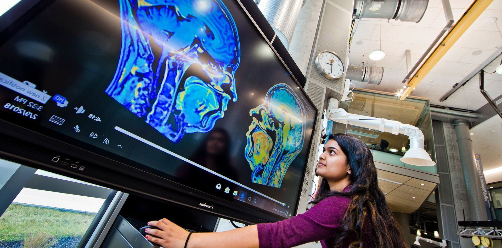

Our Strategic Commitments
We must reenvision our campus and community as a modern flagship research university for the common good.

We Reimagine Learning
We reimagine learning and teaching as inclusive, experiential, publicly engaged, creative, integrative, holistic, and empowering.
We Take On Humanity's Grand Challenges
Our education, research, scholarship and creative activities, and service are designed to accelerate solutions to humanity's grand challenges—within our communities and around the globe.
We Invest in People and Communities
We invest in people, their well-being and advancement, and the conditions that support their ability to fully participate and thrive in our community, state, and world.
We Partner to Advance the Public Good
Our future is tied to and interconnected with our local, state, national, and international partners. We will create and sustain partnerships that allow our research to have impact locally and globally, our education to prepare students for civic engagement and impact, and our service to create solutions for a more equitable, sustainable, and resilient world.
FEARLESSLY FORWARD IN PURSUIT OF EXCELLENCE AND IMPACT FOR THE PUBLIC GOOD: THE UNIVERSITY OF MARYLAND STRATEGIC PLAN is a living document and will evolve and grow as we do. Please visit this site to follow our progress as we move fearlessly forward.